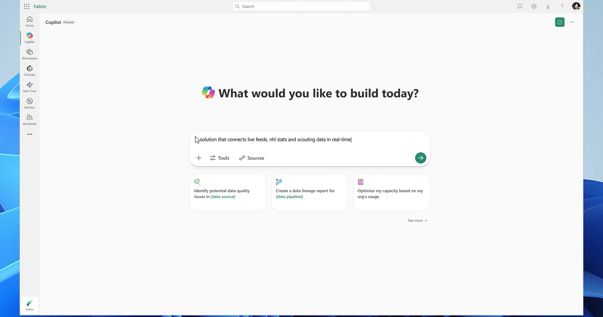
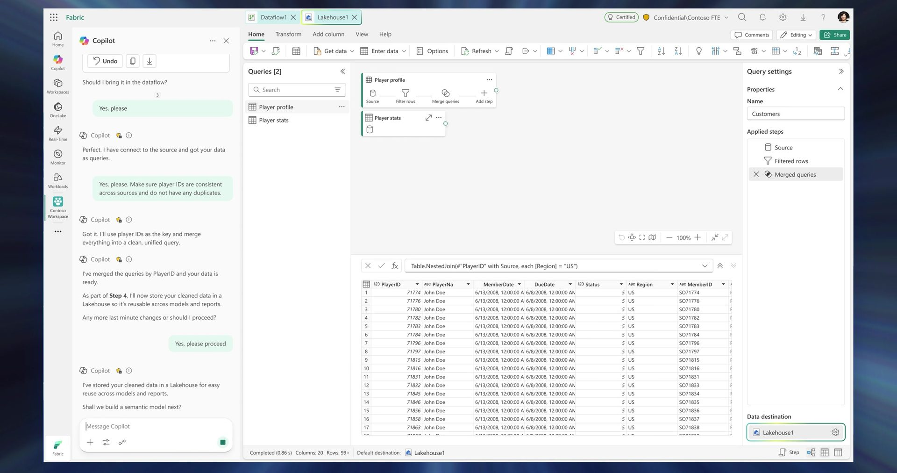

One platform, one studio
Merged two design teams and grew the studio to about 120 people, with fewer than 10 leaving in five years. Made the case for one Copilot across Fabric.
Leading before the title
For six months I led a newly merged org of about 50 before I had the title. First, I mapped who trusted whom. Then I did the thing people didn't expect: I gave the other team's most trusted leader the biggest piece, the platform everything else would build on, which could easily have been mine. We took that plan to our boss together, then coached side by side. By the time I had the title, we were already one team.
Leaders who don't need me
At Studio X, my team stalled when I went on leave. I learned from that. At Fabric, every leader under me can run without me. My job is to connect the dots across the org and bring them what they can't see from where they sit.
Brent Sandifer was a designer who'd spent years in design ops by choice, waiting for the right moment to go back. I saw that his ops skills, facilitating and building trust between PM and design, are exactly what a design leader needs. I moved him to design lead, then manager. For a long time now, he and I have spent two hours every week talking to two users together. Today he runs the platform, and for purely UX improvements, design now owns the work end to end.
Hiring for questions
I don't ask candidates why they made something blue. I ask: pick a decision you showed me; how would you have known it worked? If you didn't have research, what would you have wanted to know? And if the numbers came back like this, what would you change? It's hypothetical, so we talk as peers, and I see how they think. The people who go deepest on that are consistently the ones who succeed. One designer I hired this way is now a principal and the lead designer on the Fabric platform.
Systems, and where they end
We built one design system and scored every experience against it. We tied our quality work to Net Promoter Score (NPS), a measure of how likely people are to recommend a product. Alongside a company-wide quality push, NPS for Data Warehouse nearly tripled. We also tripled our user panel to about 3,000 people, so every designer talks with users regularly.
Our consistency scores got real fixes shipped. But they didn't move NPS, and that taught us where design's lever ends. Fabric's NPS is held down by reliability, security and missing features. So we bring that evidence to the start of every planning cycle, where the teams who own those problems set their priorities.
Unified Copilot
Every team had built its own Copilot in its own corner of Fabric. What people learned in one didn't carry over to the next. Uneven results lowered their trust in all of them. I raised the problem in planning in 2024. My designers did the user research, prototypes and partner work that made one Copilot the platform's top priority. Microsoft announced Unified Copilot in September 2026.
The design is one Copilot that walks you through a whole solution. It has a place to say what you want, a blueprint that holds your intent, and a list of the items it's building. You can watch its progress and steer.



How agents should behave
The last one came from being wrong. I opposed multitasking tabs until Brent pointed out that a Copilot working across several items needs them open in one place, and that tabs show people what the agent is working on. He was right.
- Keep the human in the loop. Agents can act on their own, as long as they make reversibility obvious.
- Let the agent ask how finished you want something before you start to iterate.
- Agents orchestrate the process, not just tasks.
- Agents expose their limits and what they need to reason better.
- Model first, then iterate, then taste. Set the intent up front, work on it together, and let the human set the quality bar.
- The UI is the feedback canvas: it shows people what the agent is working against, so they can trust and steer it.
Also in this chapter
UX quality programs
We set fix targets by how severe and how important each user experience (UX) bug was, and tied them to NPS. UX bugs became a signal we could manage, not backlog noise.
Datamarts to Fabric
Power BI's work in nearby markets grew into the developer side of Fabric.